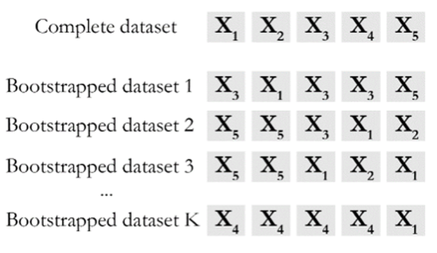
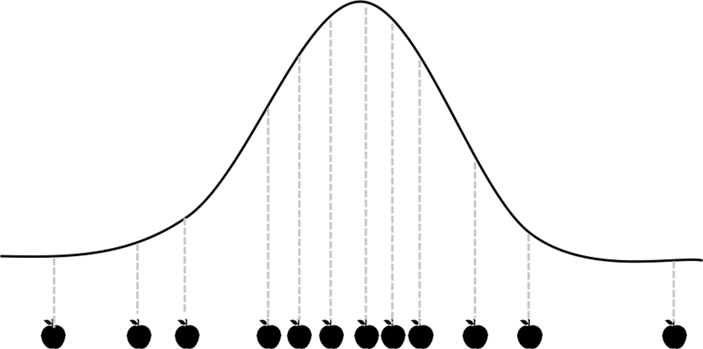
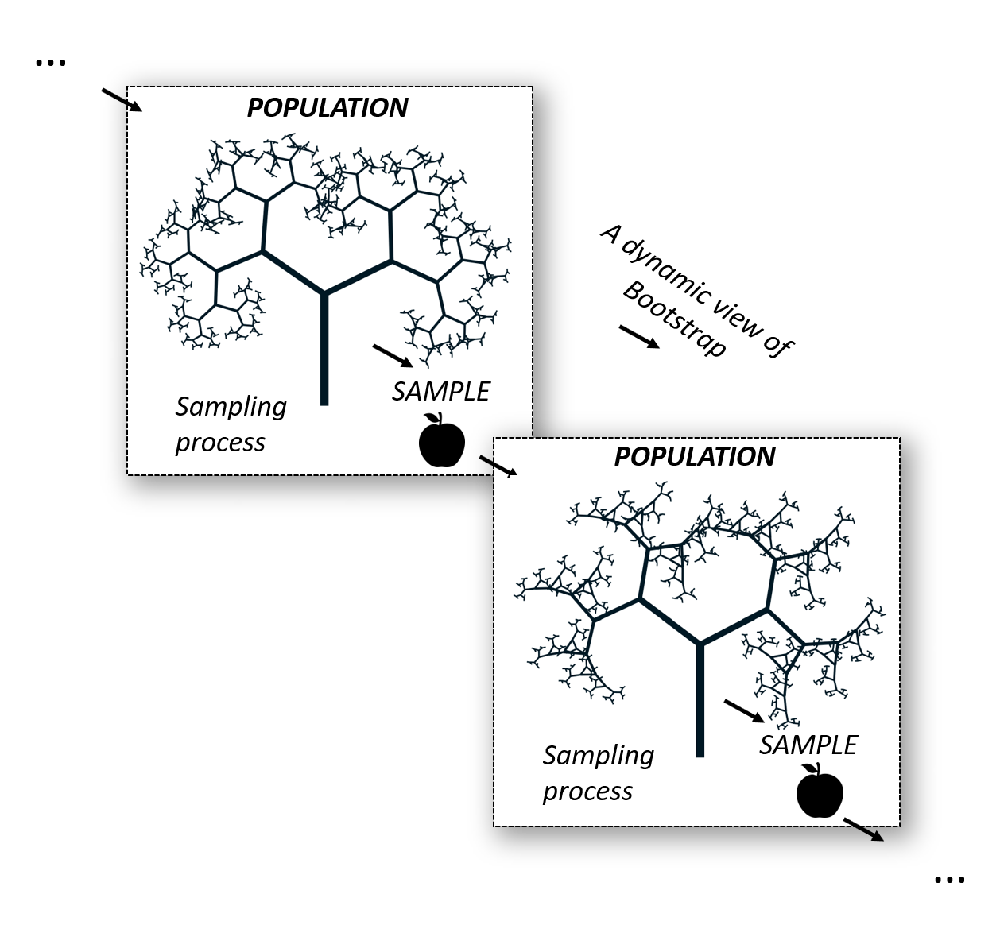
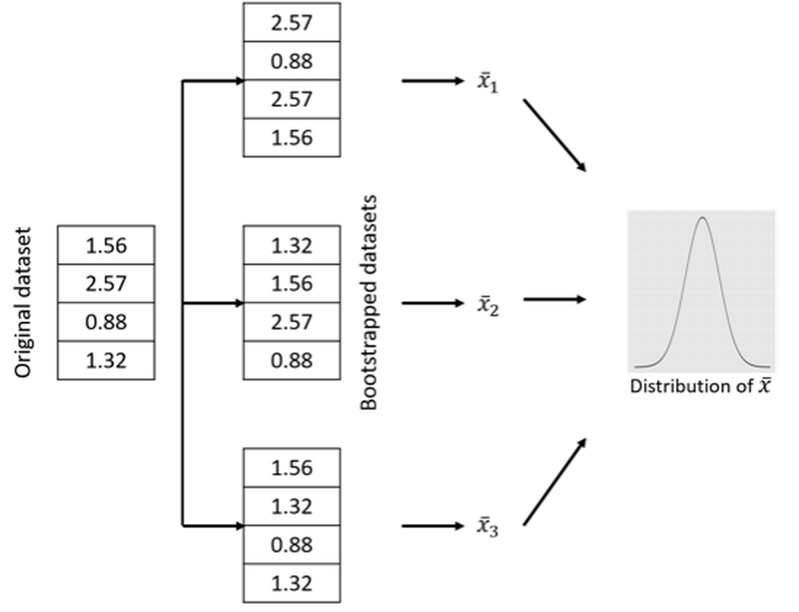
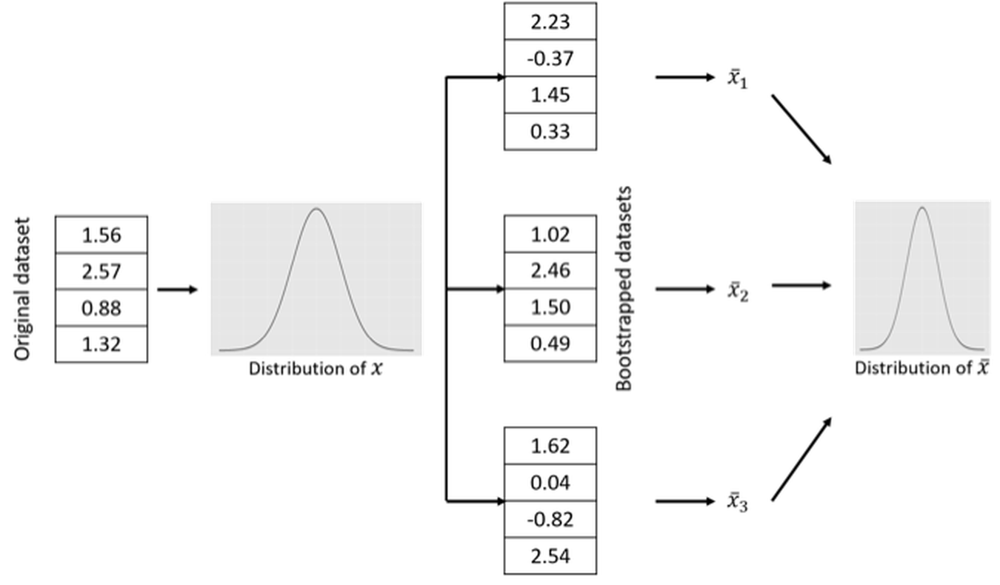
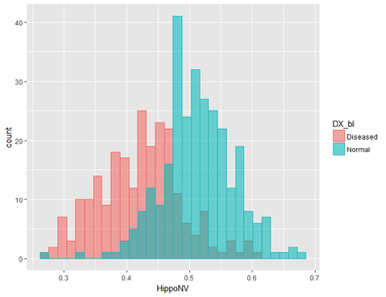
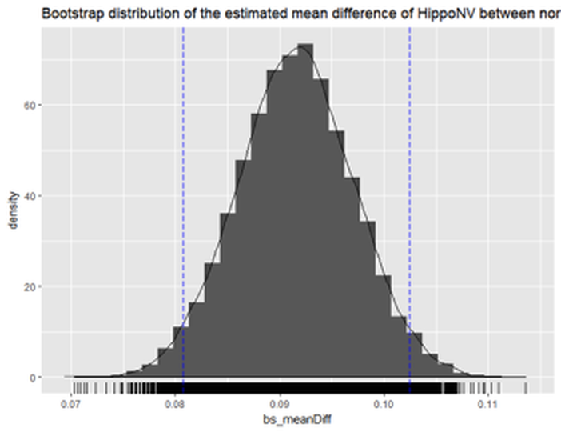
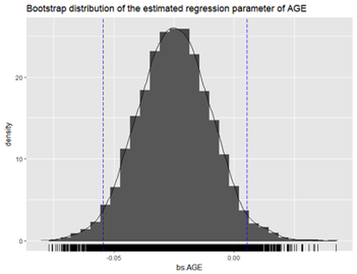
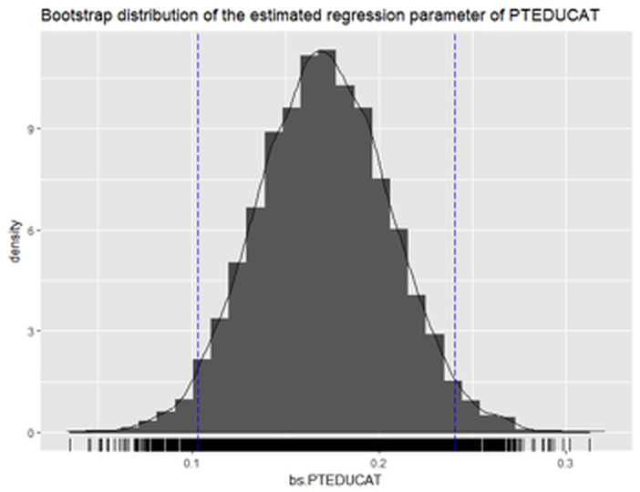

There are multiple perspectives to look at Bootstrap. One perspective that has been well studied in the seminar book79 Efron, B. and Tibshirani, R.J., * An Introduction to the Bootstrap.* Chapman & Hall/CRC, 1993. is to treat Bootstrap as a simulation of the sampling process . As we know, sampling refers to the idea that we could draw samples again and again from the same population. Many statistical techniques make sense only when we put them in the framework of sampling80 When statistics gained its scientific foundation and a modern appeal, there was also the rise of mass production that introduced human beings into a mechanical world populated with endless repetitive movements of machines and processes, as dramatized in Charlie Chaplin’s movies.. For example, in hypothesis testing, when the Type 1 Error (a.k.a., the \(\alpha\)) is set to be \(0.05\), it means that if we are able to repeat for multiple times the data collection, computation of statistics, and hypothesis testing, on average we will reject the null hypothesis \(5\%\) of the times even when the null hypothesis is true.
For many statistical models, the analytic tractability of the sampling process lays the foundation to study their behavior and performance. When there were no computers, analytical tractability had been (and still is) one main factor that determines the “fate” of a statistical model—i.e., if we haven’t found an analytical tractable formulation to study the model considering its sampling process, it is hard to convince statisticians that the model is valid81 E.g., without the possibility (even the possibility is probably only theoretical) of infinite repetition of the same process, the concept \(\alpha\) in hypothesis testing will lose its ground of being something tangible.. Nonetheless, there have been good statistical models that have no rigorous mathematical formulations, yet they are effective in applications. It may take years for us to find a mathematical framework to establish these models as rigorous approaches.
As a remedy, Bootstrap exploits the power of computers to simulate the sampling process. Figure 52 provides a simple illustration of its idea. The input of a Bootstrap algorithm is a dataset, which provides a representation of the underlying population. As the dataset is considered to be an representational equivalent of the underlying population, sampling from the underlying population could be approximated by resampling from the dataset. As shown in Figure 52, we could generate any number of Bootstrapped datasets by randomly drawing samples (with or without replacement, both have been useful) from the dataset. The idea is simple and effective.
Figure 52: A demonstration of the Bootstrap process
The conceptual power of Bootstrap. A good model has a concrete procedure of operations. That is what it does. There is also a conceptual-level perspective that concerns a model regarding what it is.
 Figure 53: A demonstration of the sampling process
A sampling process is conventionally—or conveniently—conceived as a static snapshot, as shown in Figure 53. The data points are pictured as silhouettes of apples, to highlight the psychological tendency we all share that we too often focus on the samples (the fruit) rather than the sampling process (the tree). This view is not entirely wrong, but it is a reduced view and it is easy for this fact to slip below the level of consciousness. We often take the apples as an absolute fact and forget that they are only historic coincidence: they are a representation of the apple tree (here, corresponds to the concept population); they themselves are not the apple tree.
Figure 54: A demonstration of the dynamic view of Bootstrap. The tree is drawn using http://mwskirpan.com/FractalTree/.
The Bootstrap starts from what we have forgotten. Not to study an apple as an apple, it studies the process of how an apple is created, the process of apple-ing. Bearing this objective in mind, an apple is no longer empirical, now it is a general apple. It bears the genetics of apple that is shared by all apples and conceives the possibility of an apple tree. This is the power of the Bootstrap on the conceptual level. As illustrated in Figure 54, it now animates the static snapshot shown in Figure 53 and recovers the dynamic process. It creates resonance among the snapshots, and the resonance completes the big picture and enlarges our conceptual view of the problem.
Let’s consider the estimator of the mean of a normal population. A random variable \(X\) follows a normal distribution, i.e., \(X \sim N\left(\mu, \sigma^{2}\right)\). For simplicity, let’s assume that we have known the variance \(\sigma^{2}\). We want to estimate the mean \(\mu\). What we need to do is to randomly draw a few samples from the distribution. Denote these samples as \(x_{1}, x_{2}, \ldots, x_{N}\). To estimate \(\mu\) , it seems natural to use the average of the samples, denoted as \(\overline{x}=\frac{1}{N} \sum_{n=1}^{N} x_{i}\). We use \(\overline{x}\) as an estimator of \(\mu\), i.e., \(\hat{\mu}=\overline{x}\).
Figure 55: A sampling process that concerns \(x\) (upper) and an enlarged view of the sampling process that concerns both \(x\) and \(\hat{\mu}\) (bottom)
A question arises, how good is \(\overline{x}\) to be an estimator of \(\mu\)?
Obviously, if \(\overline{x}\) is numerically close to \(\mu\), it is a good estimator. The problem is, for a particular dataset, we don’t know what is \(\mu\). And even if we know \(\mu\), we need to have criteria to tell us how close is close enough. On top of all these considerations, common sense tells us that \(\overline{x}\) itself is a random variable that is subject to uncertainty. To evaluate this uncertainty and get a general sense of how closely \(\overline{x}\) estimates \(\mu\), a brute-force approach is to repeat the physical experiment many times. But this is not necessary. In this particular problem, where \(X\) follows a normal distribution, we could circumvent the physical burden (i.e., of repeating the experiments) via mathematical derivation. Since \(X\) follows a normal distribution, we could derive that \(\overline{x}\) is another normal distribution, i.e., \(\overline{x} \sim N\left(\mu, \sigma^{2} / N\right)\). Then we know that \(\overline{x}\) is an unbiased estimator, since \(E(\overline{x})=\mu\). Also, we know that the larger the sample size, the better the estimation of \(\mu\) by \(\overline{x}\), since the variance of the estimator is \(\sigma^{2} / N\).82 In this case, the sampling process includes (1) drawing samples from the distribution; and (2) estimating \(\mu\) using \(\overline{x}\). Illustration is shown in Figure 55. The sampling process is a flexible concept, depending on what variables are under study.
Figure 56: The (nonparametric) Bootstrap scheme to computationally evaluate the sampling distribution of \(\overline{x}\)
When Bootstrap is needed. Apparently, knowing the analytic form of \(\overline{x}\) is the key in the example shown above to circumvent the physical need of sampling. And the analytic tractability originates from the condition that \(X\) follows normal distribution. For many other estimators that we found analytically intractable, Bootstrap provides a computational remedy that enables us to investigate their properties, because it computationally mimics the physical sampling process.
For example, while the distribution of \(X\) is unknown, we could follow the Bootstrap scheme illustrated in Figure 56 to evaluate the sampling distribution of \(\overline{x}\). For any bootstrapped dataset, we can calculate the \(\overline{x}\) and obtain a “sample” of \(\overline{x}\), denoted as \(\overline{x}_i\). Figure 56 only illustrates three cases, while in practice usually thousands of bootstrapped datasets are drawn. After we have the “samples” of \(\overline{x}\), we can draw the distribution of \(\overline{x}\) and present it as shown in Figure 56. Although we don’t know the distribution’s analytic form, we have its numerical representation stored in a computer.
The Bootstrap scheme illustrated in Figure 56 is called nonparametric Bootstrap, since no parametric model is used to mediate the process83 Put simply, a parametric model is a model with an explicit mathematical form that is calibrated by parameters.. This is not the only way through which we can conduct Bootstrap. For example, a parametric Bootstrap scheme is illustrated in Figure 57 to perform the same task, i.e., to study the sampling distribution of \(\overline{x}\). The difference between the nonparametric Bootstrap scheme in Figure 56 and the parametric Bootstrap scheme in Figure 57 is that, when generating new samples, the nonparametric Bootstrap uses the original dataset as the representation of the underlying population, while the parametric Bootstrap uses a fitted distribution model.
Figure 57: The (parametric) Bootstrap scheme to computationally evaluate the sampling distribution of \(\overline{x}\)
Bootstrap for regression model. We show another example about how Bootstrap could be used. In Chapter 2, we showed that we can derive the explicit distribution of the estimated regression parameters84 Recall that, to derive this distribution, a few assumptions are needed: the Gaussian assumption of the error term, and the linear assumptions between predictors and outcome variable.. Here, we introduce another approach, based on the idea of Bootstrap, to compute an empirical distribution of the estimated regression parameters.
The first challenge we encounter is the ambiguity of “population” here. Unlike in the parameter estimation examples shown in Figure 56, here, a regression model involves three entities, the predictors \(\boldsymbol{x}\), the outcome variable \(y\), and the error term \(\epsilon\). It depends on how we define the “population” to decide how Bootstrap could be used85 Remember that, Bootstrap is a computational procedure to mimic the sampling process from a population. So, when you deal with a problem, you need to determine first what is the population..
A variety of options could be obtained. Below are some examples.
[Option 1.] We could simply resample the data points (i.e., the (\(\boldsymbol{x}_n\),\(y_n\)) pairs) following the nonparametric Bootstrap scheme shown in Figure 56. For each sampled dataset, we fit a regression model and obtain the fitted regression parameters.
[Option 2.] We could fix the \(\boldsymbol{x}\), and only sample for \(y\).86 In this way we implicitly assume that the uncertainty of the dataset mainly comes from \(y\). To sample \(y\), we draw samples using a fitted conditional distribution model \(P(y|\boldsymbol{x})\).87 We could use kernel density estimation approaches, which are not introduced in this book. Interested readers could explore the R package kdensity and read the monograph by Silverman, B.W., Density Estimation for Statistics and Data Analysis, Chapman & Hall/CRC, 1986. A related method, called Kernel regression model, can be found in Chapter 9. Then, for each sampled dataset, we fit a regression model and obtain the fitted parameters.
[Option 3.] We could simulate new samples of \(\boldsymbol{x}\) using the nonparametric Bootstrap method on the samples of \(\boldsymbol{x}\) only. Then, for the new samples of \(\boldsymbol{x}\), we draw samples of \(y\) using the fitted conditional distribution model \(P(y|\boldsymbol{x})\). This is a combination of the nonparametric and parametric Bootstrap methods. Then, for each sampled dataset, we can fit a regression model and obtain the fitted regression parameters.
Via either option, we could obtain an empirical distribution of the estimated regression parameter and compute a curve like the one shown in Figure 56. For instance, suppose we repeat this process \(10,000\) times. We can obtain \(10,000\) sets of estimated regression parameters, then we can use these samples to evaluate the sampling distribution of the regression parameters. We can also see if the parameters are significantly different from \(0\), and derive their \(95\%\) confidence intervals.
The three options above are just some examples88 Options 1 and 3 both define the population as the joint distribution of \(\boldsymbol{x}\) and \(y\), but differ in the ways to draw samples. Option 2 defines the population as \(P(y|\boldsymbol{x})\) only.. As a more complicated model than simple parametric estimation in distribution fitting, how to conduct Bootstrap on regression models (and other complex models such as time series models or decision tree models) is a challenging problem.
4-Step R Pipeline. Step 1 is to load the dataset into the R workspace.
# Step 1 -> Read data into R workstation
# RCurl is the R package to read csv file using a link
library(RCurl)
url <- paste0("https://raw.githubusercontent.com",
"/analyticsbook/book/main/data/AD.csv")
AD <- read.csv(text=getURL(url))Step 2 is to implement Bootstrap on a model. Here, let’s implement Bootstrap on the parameter estimation problem for normal distribution fitting. We obtain results using both the analytic approach and the Bootstrapped approach, so we could evaluate how well the Bootstrap works.
Specifically, let’s pick up the variable HippoNV, and estimate its mean for the normal subjects89 Recall that we have both normal and diseased populations in our dataset.. Assuming that the variable HippoNV is distributed as a normal distribution, we could use the fitdistr() function from the R package MASS to estimate the mean and standard derivation, as shown below.
# Step 2 -> Decide on the statistical operation
# that you want to "Bootstrap" with
require(MASS)
fit <- fitdistr(AD$HippoNV, densfun="normal")
# fitdistr() is a function from the package "MASS".
# It can fit a range of distributions, e.g., by using the argument,
# densfun="normal", we fit a normal distribution.The fitdistr() function returns the estimated parameters together with their standard derivation90 Here, the standard derivation of the estimated parameters is derived based on the assumption of normality of HippoNV. This is a theoretical result, in contrast with the computational result by Bootstrap shown later., and the \(95\%\) CI of the estimated mean.
fit
## mean sd
## 0.471662891 0.076455789
## (0.003362522) (0.002377662)
lower.bound = fit$estimate[1] - 1.96 * fit$sd[2]
upper.bound = fit$estimate[1] + 1.96 * fit$sd[2]
## lower.bound upper.bound
## 0.4670027 0.4763231 Step 3 implements the nonparametric Bootstrap scheme91 The one shown in Figure 56., as an alternative approach, to obtain the \(95\%\) CI of the estimated mean.
# Step 3 -> draw R bootstrap replicates to
# conduct the selected statistical operation
R <- 10000
# Initialize the vector to store the bootstrapped estimates
bs_mean <- rep(NA, R)
# draw R bootstrap resamples and obtain the estimates
for (i in 1:R) {
resam1 <- sample(AD$HippoNV, length(AD$HippoNV),
replace = TRUE)
# resam1 is a bootstrapped dataset.
fit <- fitdistr(resam1 , densfun="normal")
# store the bootstrapped estimates of the mean
bs_mean[i] <- fit$estimate[1]
}Here, \(10,000\) replications are simulated by the Bootstrap method. The bs_mean is a vector of \(10,000\) elements to record all the estimated mean parameter in these replications. These \(10,000\) estimated parameters could be taken as a set of samples.
Step 4 is to summarize the Bootstrapped samples, i.e., to compute the \(95\%\) CI of the estimated mean, as shown below.
# Step 4 -> Summarize the results and derive the
# bootstrap confidence interval (CI) of the parameter
# sort the mean estimates to obtain quantiles needed
# to construct the CIs
bs_mean.sorted <- sort(bs_mean)
# 0.025th and 0.975th quantile gives equal-tail bootstrap CI
CI.bs <- c(bs_mean.sorted[round(0.025*R)],
bs_mean.sorted[round(0.975*R+1)])
CI.bs
## lower.bound upper.bound
## 0.4656406 0.4778276 It is seen that the \(95\%\) CI by Bootstrap is close to the \(95\%\) CI in the theoretical result. This shows the validity and efficacy of the Bootstrap method to evaluate the uncertainty of a statistical operation92 Bootstrap is as good as the theoretical method, but it doesn’t require to know the variable’s distribution. The cost it pays for this robustness is its computational overhead. In this example, the computation is light. For some other cases, the computation could be burdensome, i.e., when the dataset becomes big, or the statistical model itself has been computationally demanding..
Beyond the 4-step Pipeline. While the estimation of the mean of HippoNV is a relatively simple operation, in what follows, we consider a more complex statistical operation, the comparison of the mean parameters of HippoNV across the two classes, normal and diseased.
To do so, the following R code creates a temporary dataset for this purpose.
tempData <- data.frame(AD$HippoNV,AD$DX_bl)
names(tempData) = c("HippoNV","DX_bl")
tempData$DX_bl[which(tempData$DX_bl==0)] <- c("Normal")
tempData$DX_bl[which(tempData$DX_bl==1)] <- c("Diseased")We then use ggplot() to visualize the two distributions by comparing their histograms.
p <- ggplot(tempData,aes(x = HippoNV, colour=DX_bl))
p <- p + geom_histogram(aes(y = ..count.., fill=DX_bl),
alpha=0.5,position="identity")
print(p)The result is shown in Figure 58. It could be seen that the two distributions differ from each other. To have a formal evaluation of this impression, the following R code shows how the nonparametric Bootstrap method can be implemented here.

Figure 58: Histograms of HippoNV in the normal and diseased groups
# draw R bootstrap replicates
R <- 10000
# init location for bootstrap samples
bs0_mean <- rep(NA, R)
bs1_mean <- rep(NA, R)
# draw R bootstrap resamples and obtain the estimates
for (i in 1:R) {
resam0 <- sample(tempData$HippoNV[which(tempData$DX_bl==
"Normal")],length(tempData$HippoNV[which(tempData$DX_bl==
"Normal")]),replace = TRUE)
fit0 <- fitdistr(resam0 , densfun="normal")
bs0_mean[i] <- fit0$estimate[1]
resam1 <- sample(tempData$HippoNV[which(tempData$DX_bl==
"Diseased")],
length(tempData$HippoNV[which(tempData$DX_bl==
"Diseased")]),replace = TRUE)
fit1 <- fitdistr(resam1 , densfun="normal")
bs1_mean[i] <- fit1$estimate[1]
}
bs_meanDiff <- bs0_mean - bs1_mean
# sort the mean estimates to obtain bootstrap CI
bs_meanDiff.sorted <- sort(bs_meanDiff)
# 0.025th and 0.975th quantile gives equal-tail bootstrap CI
CI.bs <- c(bs_meanDiff.sorted[round(0.025*R)],
bs_meanDiff.sorted[round(0.975*R+1)])
CI.bs

Figure 59: Histogram of the estimated mean difference of HippoNV in the two groups by Bootstrap with \(10,000\) replications
The \(95\%\) CI of the difference of the two mean parameters is
CI.bs
## [1] 0.08066058 0.10230428The following R code draws a histogram of the bs_meanDiff to give us visual information about the Bootstrapped estimation of the mean difference, which is shown in Figure 59. The difference is statistically significant.
## Plot the bootstrap distribution with CI
# First put data in data.frame for ggplot()
dat.bs_meanDiff <- data.frame(bs_meanDiff)
library(ggplot2)
p <- ggplot(dat.bs_meanDiff, aes(x = bs_meanDiff))
p <- p + geom_histogram(aes(y=..density..))
p <- p + geom_density(alpha=0.1, fill="white")
p <- p + geom_rug()
# vertical line at CI
p <- p + geom_vline(xintercept=CI.bs[1], colour="blue",
linetype="longdash")
p <- p + geom_vline(xintercept=CI.bs[2], colour="blue",
linetype="longdash")
title = "Bootstrap distribution of the estimated mean
difference of HippoNV between normal and diseased"
p <- p + labs(title =title)
print(p)We can also apply Bootstrap on linear regression. In Chapter 2 we have fitted a regression model of MMSCORE and presented the analytically derived standard derivation of the estimated regression parameters93 I.e., as shown in Eq. (19).. Here, we show that we could use Bootstrap to compute the \(95\%\) CI of the regression parameters as well.
First, we fit a linear regression model.
# Fit a regression model first, for comparison
tempData <- data.frame(AD$MMSCORE,AD$AGE, AD$PTGENDER, AD$PTEDUCAT)
names(tempData) <- c("MMSCORE","AGE","PTGENDER","PTEDUCAT")
lm.AD <- lm(MMSCORE ~ AGE + PTGENDER + PTEDUCAT, data = tempData)
sum.lm.AD <- summary(lm.AD)
# Age is not significant according to the p-value
std.lm <- sum.lm.AD$coefficients[ , 2]
lm.AD$coefficients[2] - 1.96 * std.lm[2]
lm.AD$coefficients[2] + 1.96 * std.lm[2]The fitted regression model is
##
## Call:
## lm(formula = MMSCORE AGE + PTGENDER + PTEDUCAT,
## data = tempData)
##
## Residuals:
## Min 1Q Median 3Q Max
## -8.4290 -0.9766 0.5796 1.4252 3.4539
##
## Coefficients:
## Estimate Std. Error t value Pr(>|t|)
## (Intercept) 27.70377 1.11131 24.929 < 2e-16 ***
## AGE -0.02453 0.01282 -1.913 0.0563 .
## PTGENDER -0.43356 0.18740 -2.314 0.0211 *
## PTEDUCAT 0.17120 0.03432 4.988 8.35e-07 ***
## ---
## Signif. codes: 0 '***' 0.001 '**' 0.01 '*' 0.05
## '.' 0.1 ' ' 1
##
## Residual standard error: 2.062 on 513 degrees of freedom
## Multiple R-squared: 0.0612, Adjusted R-squared: 0.05571
## F-statistic: 11.15 on 3 and 513 DF, p-value: 4.245e-07
## Lower bound Upper bound
## [1] -0.04966834 0.000600785Then, we follow Option 1 to conduct Bootstrap for the linear regression model.
# draw R bootstrap replicates
R <- 10000
# init location for bootstrap samples
bs_lm.AD_demo <- matrix(NA, nrow = R, ncol =
length(lm.AD_demo$coefficients))
# draw R bootstrap resamples and obtain the estimates
for (i in 1:R) {
resam_ID <- sample(c(1:dim(tempData)[1]), dim(tempData)[1],
replace = TRUE)
resam_Data <- tempData[resam_ID,]
bs.lm.AD_demo <- lm(MMSCORE ~ AGE + PTGENDER + PTEDUCAT,
data = resam_Data)
bs_lm.AD_demo[i,] <- bs.lm.AD_demo$coefficients
}The bs_lm.AD_demo records the estimated regression parameters in the \(10,000\) replications. The following R code shows the \(95\%\) CI of AGE by Bootstrap.
bs.AGE <- bs_lm.AD_demo[,2]
# sort the mean estimates of AGE to obtain bootstrap CI
bs.AGE.sorted <- sort(bs.AGE)
# 0.025th and 0.975th quantile gives equal-tail
# bootstrap CI
CI.bs <- c(bs.AGE.sorted[round(0.025*R)],
bs.AGE.sorted[round(0.975*R+1)])
CI.bsIt is clear that the 95\(\%\) CI of AGE includes \(0\) in the range. This is consistent with the result by t-test that shows the variable AGE is insignificant (i.e., p-value\(=0.0563\)). We can also see that the \(95\%\) CI by Bootstrap is close to the \(95\%\) CI by theoretical result.
CI.bs
## Lower bound Upper bound
## [1] -0.053940482 0.005090523

Figure 60: Histogram of the estimated regression parameter of AGE by Bootstrap with \(10,000\) replications
The following R codes draw a histogram of the Bootstrapped estimation of the regression parameter of AGE to give us a visual examination about the Bootstrapped estimation, which is shown in Figure 60.
## Plot the bootstrap distribution with CI
# First put data in data.frame for ggplot()
dat.bs.AGE <- data.frame(bs.AGE.sorted)
library(ggplot2)
p <- ggplot(dat.bs.AGE, aes(x = bs.AGE))
p <- p + geom_histogram(aes(y=..density..))
p <- p + geom_density(alpha=0.1, fill="white")
p <- p + geom_rug()
# vertical line at CI
p <- p + geom_vline(xintercept=CI.bs[1], colour="blue",
linetype="longdash")
p <- p + geom_vline(xintercept=CI.bs[2], colour="blue",
linetype="longdash")
title <- "Bootstrap distribution of the estimated
regression parameter of AGE"
p <- p + labs(title = title)
print(p)We can also see the \(95\%\) CI of PTEDUCAT as shown below, which is between \(0.1021189\) and \(0.2429209\). This is also close to the the \(95\%\) CI by theoretical result. Also, t-test also shows the variable PTEDUCAT is significant (i.e., p-value is \(8.35e-07\)).
bs.PTEDUCAT <- bs_lm.AD_demo[,4]
# sort the mean estimates of PTEDUCAT to obtain
# bootstrap CI
bs.PTEDUCAT.sorted <- sort(bs.PTEDUCAT)
# 0.025th and 0.975th quantile gives equal-tail
# bootstrap CI
CI.bs <- c(bs.PTEDUCAT.sorted[round(0.025*R)],
bs.PTEDUCAT.sorted[round(0.975*R+1)])
CI.bs
CI.bs
## [1] 0.1021189 0.2429209

Figure 61: Histogram of the estimated regression parameter of PTEDUCAT by Bootstrap with \(10,000\) replications
The following R code draws a histogram (i.e., Figure 61) of the Bootstrapped estimation of the regression parameter of PTEDUCAT.
## Plot the bootstrap distribution with CI
# First put data in data.frame for ggplot()
dat.bs.PTEDUCAT <- data.frame(bs.PTEDUCAT.sorted)
library(ggplot2)
p <- ggplot(dat.bs.PTEDUCAT, aes(x = bs.PTEDUCAT))
p <- p + geom_histogram(aes(y=..density..))
p <- p + geom_density(alpha=0.1, fill="white")
p <- p + geom_rug()
# vertical line at CI
p <- p + geom_vline(xintercept=CI.bs[1], colour="blue",
linetype="longdash")
p <- p + geom_vline(xintercept=CI.bs[2], colour="blue",
linetype="longdash")
title <- "Bootstrap distribution of the estimated regression
parameter of PTEDUCAT"
p <- p + labs(title = title )
print(p)